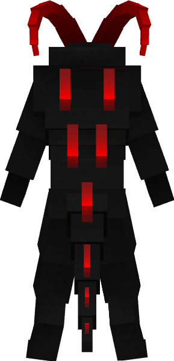
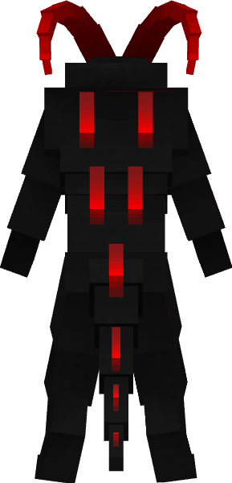

About Redonulis
Redonulis is the name of the boss in our mod. He will spawn in the new structure/temple that was also added by the Redonulis mod. You can find him in the throne room of his temple. He has 3 different attack animations and can summon minions to help him fight. Redonulis has 250 health and is impervious to arrows and fire. When killed he will drop 2 items 1 of them is a horn.
 
